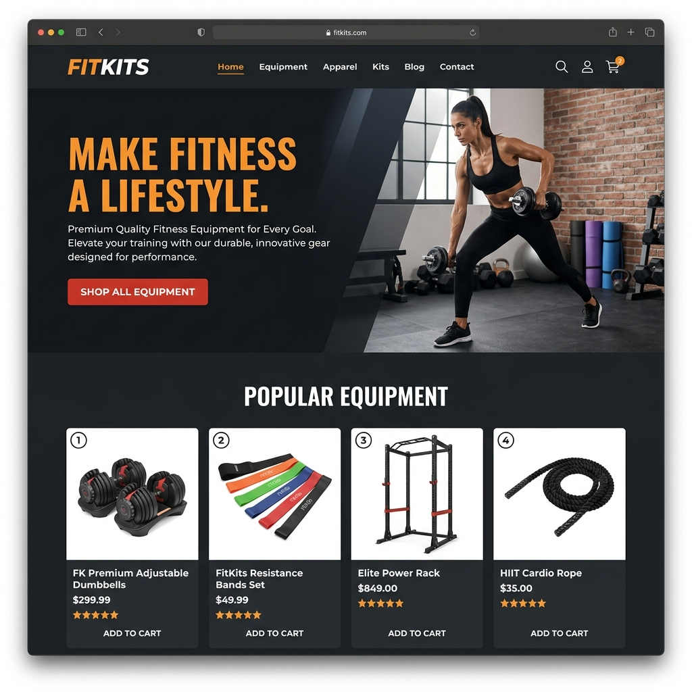
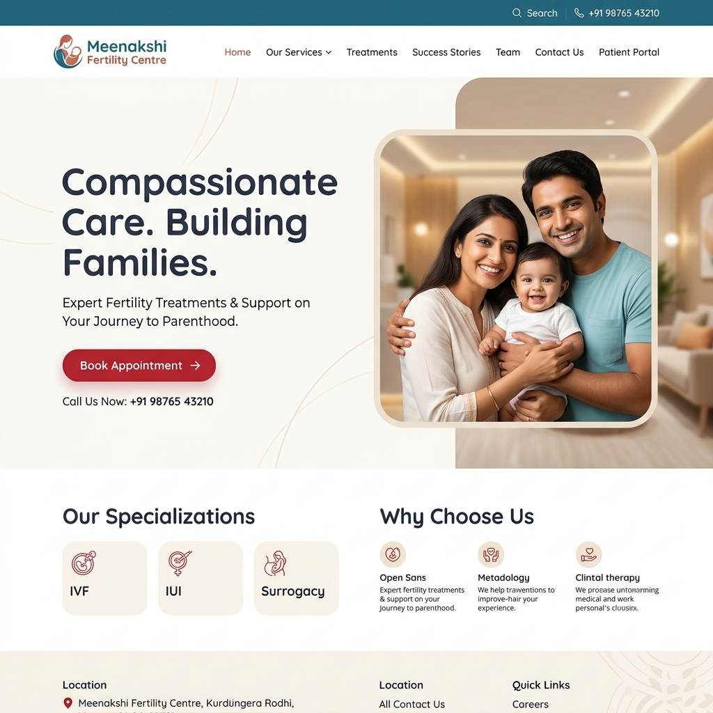

SEO Services in Trichy for Better Organic Search Visibility
When potential customers search for products or services your business offers, your website needs to be relevant, accessible and useful enough to compete for their attention.
But improving search visibility involves more than adding keywords to website content. Technical issues, poorly targeted pages, unclear website structure and content that does not address customer needs can all limit your organic search performance.
RiverBird provides SEO services in Trichy as part of its digital marketing solutions. Our published SEO capabilities include technical SEO, e-commerce optimisation and search-focused content strategy.
We focus on improving the parts of your website that influence how search engines discover, understand and present your pages, while keeping your business goals and target customers in view.
Whether you operate a local business, an online store or a company serving customers across India, the SEO strategy should reflect what you offer, how people search for it and which pages can best answer their needs.
Top Rankings
More Visibility
More Business
Organic Traffic
Keyword Rankings
Clicks
Impressions
SEO Services That Address Different Parts of Your Website
SEO involves several connected areas. The right combination depends on your website condition, business model, competition and target search intent.
Technical SEO – Improve the Foundation
Technical problems can make it difficult for search engines to access and interpret important website pages. Technical SEO focuses on identifying and resolving issues affecting crawling, indexing, website structure and performance.
Areas requiring attention include:
- Crawlability and indexing issues
- XML sitemap and robots.txt configuration
- Canonical tags and duplicate URL management
- Broken links and unnecessary redirect chains
- Website loading performance & Core Web Vitals
- Structured data implementation & internal linking
For example, an e-commerce website may contain several similar URLs created through product filters. Technical SEO establishes an accessible and organised website foundation.
On-Page SEO – Relevant to Target Search
On-page optimisation improves individual web pages so their content and structure communicate their subject clearly. This requires understanding the searcher's purpose before deciding which elements to change.
Relevant optimisation areas:
- SEO title and meta description
- H1, H2 and H3 heading structure
- Primary and supporting keyword placement
- Search-intent alignment and content readability
- Descriptive image names and alternative text
- Internal links between relevant pages & clean URLs
Every important page should have a clear purpose. A service page should explain that service in detail instead of repeating homepage generalities.
Content SEO – Useful Customer Content
Search-focused content should answer the questions and requirements of the people you want to reach. Publishing more articles does not automatically create better organic visibility.
Content SEO scope:
- Search-intent-based content planning
- Service-page content optimisation
- Topic and keyword mapping
- Content gap identification
- Relevant blog and resource planning
- Improving outdated or incomplete content
The objective is to provide useful information while making the relationship between your services and customer searches easy to understand.
Local SEO – Location-Based Searches
For businesses that depend on customers within a particular geographical area, local search visibility can be especially relevant. Someone searching in Trichy may be looking for a nearby provider.
Local SEO scope:
- Location-focused keyword research
- Google Business Profile optimisation
- Consistent business contact and location info
- Relevant local website content
- Location and service-page optimisation
- Local citation & business-listing assessment
For businesses targeting Tiruchirappalli, content should reflect actual services and locations. Adding Trichy to every heading is no substitute for genuine relevance.
E-Commerce SEO – Discoverability
Online stores need an SEO strategy that considers how customers discover and compare products. E-commerce SEO focuses on making category, product and shopping pages easier to find.
Optimisation covers:
- Product and category page content
- Commercial search keyword alignment
- Product titles and descriptions
- Category navigation and internal linking
- Duplicate and filtered URL management
- Mobile shopping experience
A good e-commerce SEO structure helps search engines understand product categories while allowing shoppers to navigate easily.
Your Website Needs an SEO Strategy Based on What Is Actually Holding It Back
Two businesses in the same industry may need completely different SEO priorities.
One website may have valuable content but serious indexing problems. Another may be technically sound but have service pages that do not match what potential customers are searching for.
Before deciding which SEO activities matter, the website and its search opportunities need to be understood. Important areas to evaluate include:
Search relevance
Are your pages targeting queries that match your actual products and services?
Technical accessibility
Can search engines discover, crawl and understand your important pages?
Content quality
Does each page provide useful information that satisfies its intended search?
Website structure
Are related pages connected through understandable navigation and internal links?
Local relevance
Can customers in your target locations identify your business and its services?
Business outcomes
Are organic visitors taking meaningful actions such as contacting your business or enquiring about your services?
The purpose of SEO is not simply to increase the number of keywords appearing in search reports. It is to improve the relevance and accessibility of your website for the searches that matter to your business.
SEO Priorities Are Different for Every Business Model
The strategy should reflect the way your business attracts and serves customers.
Local service businesses
A clinic, consultancy, repair service or other local business may need to focus on service-related searches, relevant location information, useful service pages and local search visibility.
E-commerce businesses
An online store needs to make its products and categories discoverable through relevant searches while maintaining a clear website structure and shopping experience.
B2B and industrial businesses
A business selling to other organisations may need informative service pages, industry-specific content and detailed explanations that help decision-makers evaluate its offerings.
Companies serving wider markets
Businesses targeting customers beyond Trichy should avoid limiting their entire SEO strategy to city-based keywords. Their pages should reflect the broader markets and services they actually serve.
Websites We’ve Optimized. Results We’re Proud Of.
Explore a few of the websites we’ve optimized and the real SEO results that helped our clients grow their business.

FitKits
Health & Fitness Equipment Store
Olivia Marketers
Digital Marketing Agency

Meenakshi Fertility Centre
Healthcare
How to Identify the Right SEO Priorities
SEO work should address the most relevant problems rather than follow an identical checklist for every website.
A practical evaluation should consider five areas:
Understand the website
Identify the important pages, existing content, technical limitations and business requirements.
Understand customer searches
Research relevant queries and separate informational searches from commercial and transactional searches.
Identify page-level opportunities
Determine which existing pages should target particular search topics. Avoid creating multiple pages with substantially the same purpose.
Prioritise improvements
Distinguish between technical corrections, content improvements and new opportunities. Recommendations should reflect their relevance and implementation requirements.
Evaluate changes
Review organic search visibility, important landing pages, visitor behaviour and meaningful enquiry actions over time.
This gives the SEO strategy a clearer relationship with actual website improvements instead of treating rankings as the only measure of progress.
What Should You Expect From an SEO Engagement?
Before selecting an SEO agency, businesses should understand what the engagement involves.
SEO is not an immediate, one-time fix. Search engines update their algorithms, competitors improve their websites, and search behaviour changes over time.
A responsible SEO engagement involves:
- Clear evaluation of current website performance and technical health
- Prioritised recommendations rather than generic checklists
- Transparent communication about what changes are needed and why
- Practical collaboration with your development or content team to implement corrections
- Regular performance reviews focused on meaningful business metrics
Clear responsibilities make the engagement easier to evaluate.
Measure SEO Through Meaningful Website Performance
Keyword positions are useful, but they do not tell the entire story of an SEO campaign.
The performance indicators should reflect the original objectives.
| Performance area | What to evaluate |
|---|---|
| Search visibility | Impressions and relevant search queries |
| Organic visits | Clicks and organic landing-page traffic |
| Search-result performance | Click-through rate and average position |
| Website engagement | Relevant landing-page interactions |
| Enquiries | Contact forms, calls and other attributable leads |
| E-commerce performance | Organic transactions and revenue where tracking is available |
For example, a business may receive visitors through informational blog searches without generating many commercial enquiries. That does not necessarily mean the content is unsuccessful. However, the business should distinguish informational traffic from visitors reaching important service and product pages.
Performance assessment should also consider changes made, the reporting period and the availability of reliable analytics and conversion tracking.
SEO cannot guarantee a particular ranking, traffic increase or revenue result.
Why SEO Should Be Connected to Your Wider Digital Marketing Strategy
Organic search is one part of a business's digital presence.
Your SEO strategy should support the pages that communicate your products, services and business value.
For example, a business may use SEO to improve the discoverability of important service pages while using other marketing channels to introduce its offerings to potential customers.
RiverBird provides SEO within its wider digital marketing service offering.
Explore Digital Marketing Services →Frequently Asked Questions About SEO Services
Common questions from businesses in Trichy looking to improve their search visibility.
SEO services can include technical website optimisation, keyword research, on-page improvements, content strategy, local search optimisation and e-commerce SEO. The exact scope depends on the website, business objectives and target audience. A suitable SEO plan should identify the areas that need attention rather than applying the same activities to every business.
SEO does not have a fixed completion or ranking timeline. Results depend on the website's existing technical condition, competition, content quality, website authority and the speed at which recommended changes are implemented. Some technical improvements may be addressed quickly, while changes in organic search performance generally require observation over time. No responsible agency can guarantee an identical timeline for every website.
Technical SEO focuses on website elements that affect crawling, indexing and search-engine accessibility. It can include XML sitemaps, robots.txt, canonical tags, redirects, website architecture, mobile usability and page performance. If important pages cannot be properly discovered or interpreted, improving their content alone may not address the underlying problem.
Local SEO can help businesses improve their visibility for geographically relevant searches. It is particularly relevant to companies serving customers within specific areas. Work may involve Google Business Profile optimisation, accurate business information, relevant location content and local search intent. The strategy should reflect the genuine service locations rather than create unnecessary location pages.
SEO performance can be evaluated through search impressions, organic clicks, relevant landing-page traffic, keyword visibility and meaningful customer actions. Businesses should also monitor enquiries, calls or online transactions when reliable conversion tracking is available. A useful report distinguishes between search visibility, website visits and actual business outcomes rather than presenting keyword positions alone.
Discuss Your Website's SEO
Requirements With RiverBird
Improving organic search visibility starts with understanding your existing website and the searches your potential customers use. Whether you need to address technical website issues, improve e-commerce page discoverability or develop more relevant search-focused content, the appropriate SEO scope should be based on your actual requirements. RiverBird is based in Tiruchirappalli, Tamil Nadu, and provides digital marketing services to businesses looking to strengthen their online presence. Share your website URL, main services and target audience with our team. We can discuss your SEO requirements and the appropriate next steps.